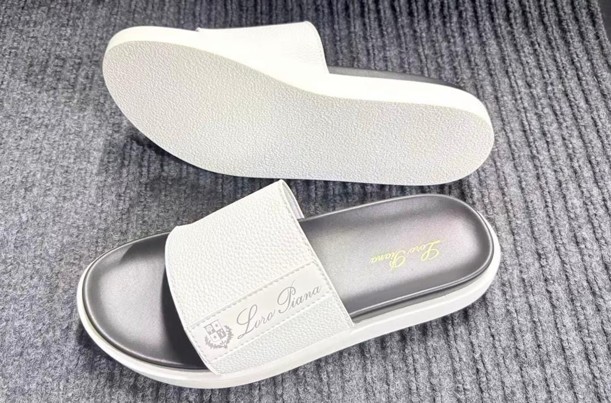

Puir-kèta Fashion
Une allure qui
reste en mouvement.
Une maison indépendante qui sélectionne des chaussures au caractère affirmé, avec une attention particulière portée à la ligne, au confort et à la qualité.

Depuis2024
Notre vision
Moins, mais
mieux choisi.
Puir-kèta Fashion est née d'une envie simple : rendre le style accessible à travers une collection claire, durable et facile à commander.
Chaque modèle est présenté avec transparence. Vous choisissez votre paire, nous échangeons directement avec vous sur WhatsApp pour confirmer les détails et la disponibilité.
Voir la collection ↘01
Une sélection exigeante
Des modèles choisis pour leur présence et leur confort au quotidien.
02
Un échange humain
Une commande simple, directement avec notre équipe sur WhatsApp.
03
Une signature locale
Une boutique pensée au Burkina Faso, pour une clientèle qui avance.